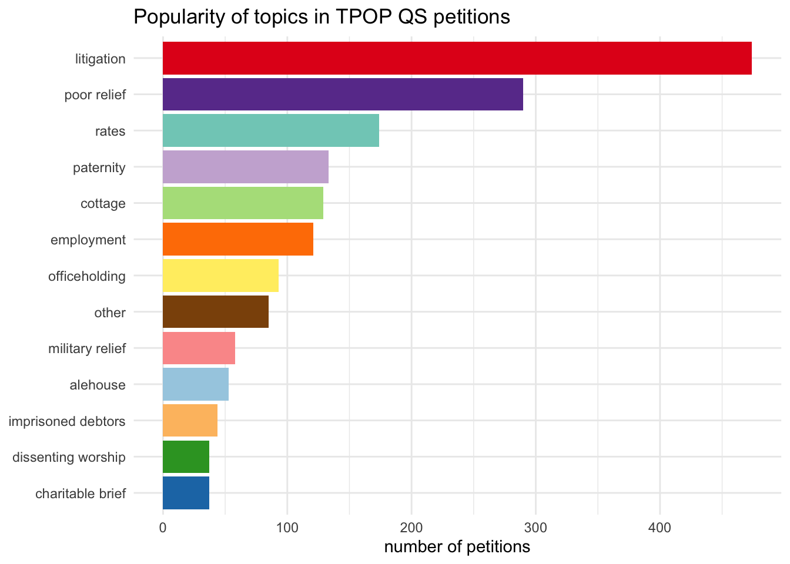
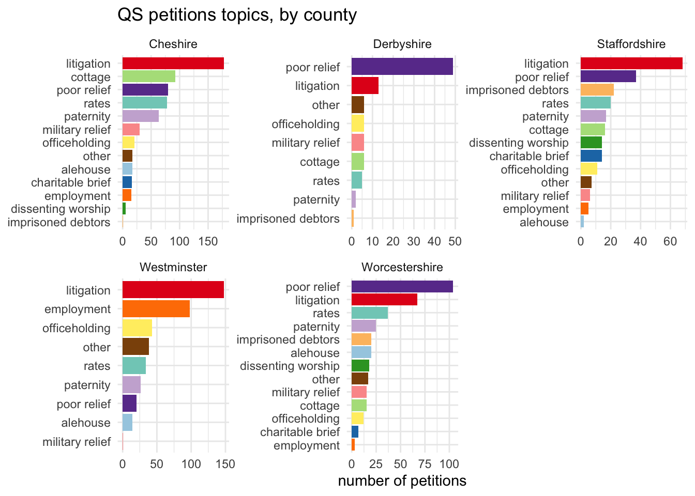
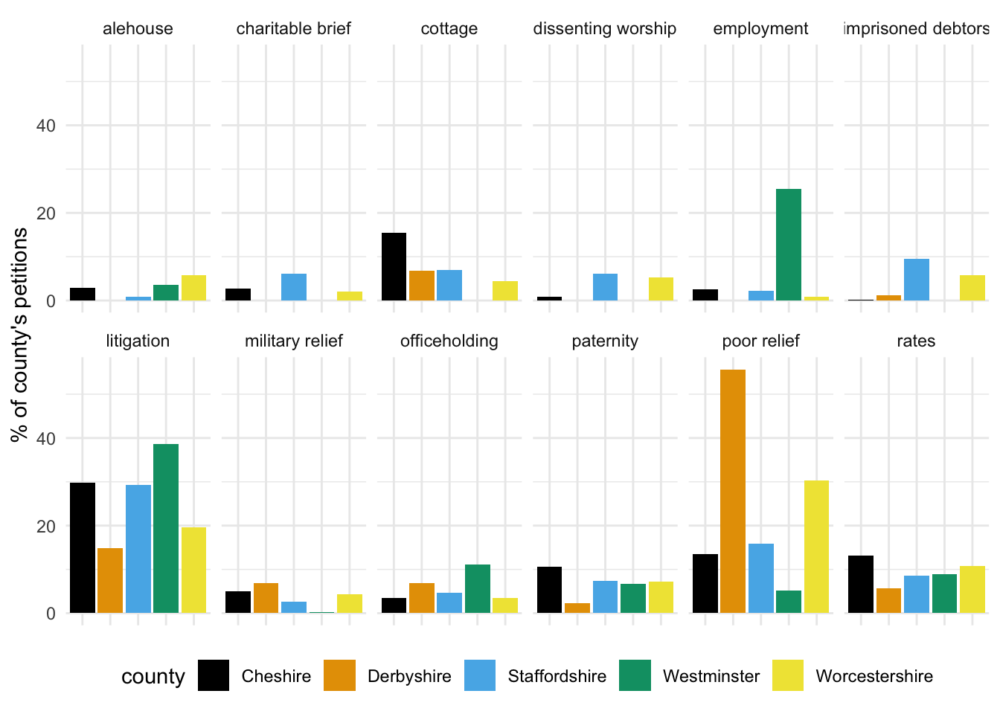
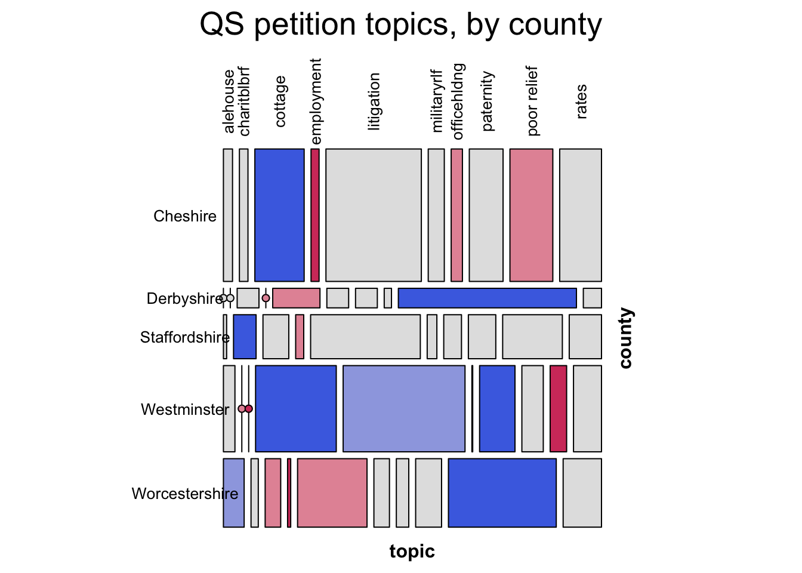
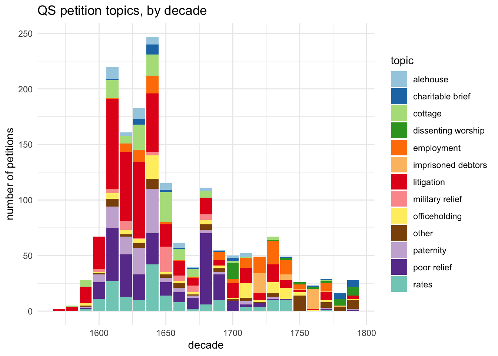
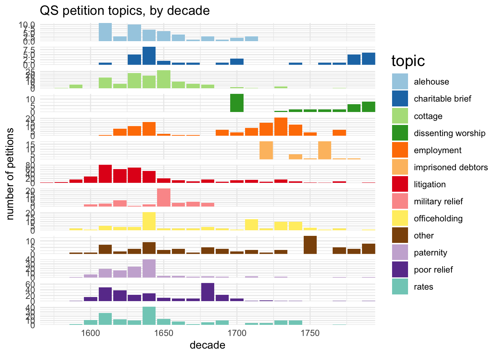
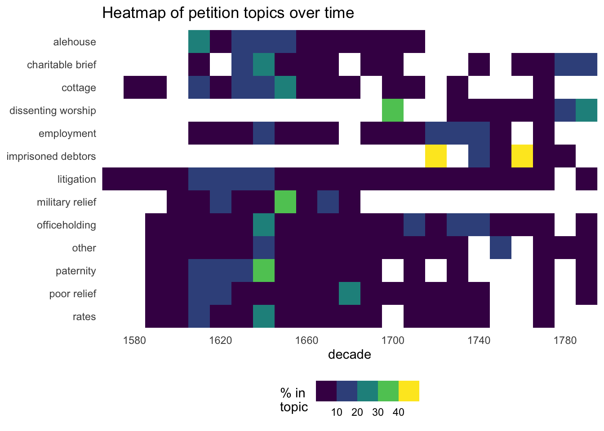
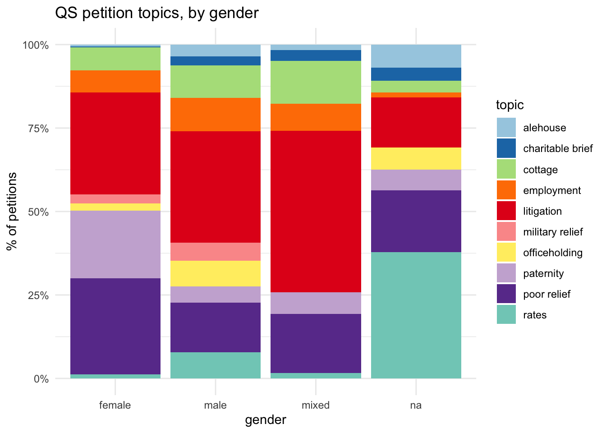
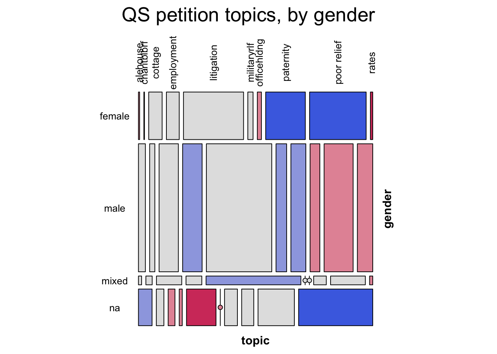
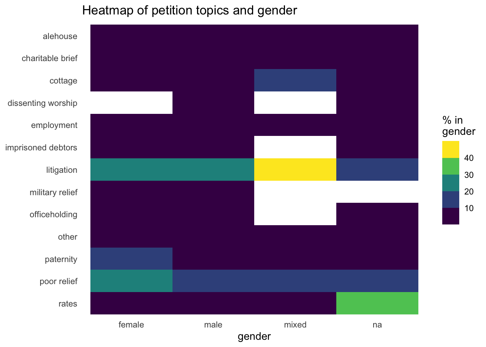

QS petition topics
QS
topics
What were petitions about?
Quarter Sessions petitions topics and themes
The Power of Petitioning project team manually assigned broad topics to each of the transcribed collections, as well as a number of other collections for which we had rich enough metadata. I’ll focus for now on Quarter Sessions because they have their own set of topics and the project tried (as far as possible) to apply them consistently to enable comparison of the counties. [I’ll try to do a later update for the State Papers and House of Lords collections, but the topics for these are quite different.]
There is a brief analysis of topics for each county in the introductions to the British History Online editions, so I’ll focus more on an overview and comparisons here.
The data
The data is available, with full documentation, from Zenodo.
[Note: the first version of this page also included about 400 Hertfordshire petitions, for which I had less detailed information. The Hertfordshire data has not been included in TPOP’s public data release and it made only minor differences to the analysis on this page, so I’ve removed it for now. Some statistics will differ from the original version.]
The counties
- Cheshire
- transcriptions / metadata 1573-1798
- all pre-1600 petitions, then a sample of all surviving petitions for 1 year in every decade [613 petitions]
- Derbyshire
- transcriptions 1632-1770
- every surviving petition that could be dated to within a decade [94 petitions]
- NB however, many surviving petitions can’t be dated and have been excluded from the collection
- Staffordshire
- transcriptions 1589-1799
- sample: all surviving petitions from one year per decade [239 petitions]
- Westminster
- transcriptions 1620-1799
- every surviving petition [424 petitions]
- Worcestershire
- transcriptions 1592-1797
- every surviving petition (except a few early illegible/damaged ones) [360 petitions]
The topics
- alehouse: all about licences (including victualling houses, inns, taverns)
- charitable brief: requests for certificates to allow the petitioners to collect charity in response to personal calamities such as house fires
- cottage: licences to build cottages on ‘waste’ lands
- dissenting worship: concerning applications for licences to establish places of worship (following the Toleration Act of 1689)
- employment: service, apprenticeship, wages
- imprisoned debtors: applications for release from imprisoned debtors (18th century)
- litigation: broad category for uses of and encounters with the legal/criminal justice system (eg request for prosecution, request for mercy or discharge)
- military relief: requests for pensions (soldier, sailor, widow/wife)
- officeholding: mostly to do with constables (eg trying to get out of serving, or seeking compensation for expenses)
- paternity: financial support for children; mostly to do with bastardy, obtaining/avoiding maintenance from father/husband
- poor relief: relief or removal under the poor law system (often complaints that local overseers were refusing to pay relief to which the petitioner was entitled, or parish appeals about removals)
- rates: mainly attempting to impose or avoid payment of various communal rates, levies or taxes
- other: anything that didn’t fit into the categories above
caveats
The chronological distribution of petitions in several counties is very lumpy, and it’s hard to be sure in some cases whether this reflects actual petitioning trends, random losses or other less random factors, and whether the surviving petitions are representative. Derbyshire is particularly difficult (IIRC, more petitions were excluded than included). Westminster is also problematic; 44 petitions couldn’t be dated to within a single decade (though all were within the period 1620-1640), and these were not evenly distributed across topics.
Two counties, Cheshire and Staffordshire, have been sampled by the simple method of taking one year in ten. This is unlikely to be a significant issue for overviews and comparisons of gender. But it’s much more awkward for any attempt at chronological analysis. I’ve ignored that here and simply counted by decade. But I’ll probably need to think much harder about this before long.
Overview of topics
Which were the most popular topics of QS petitions?
Comparing counties: three views
a bar chart
The colour coding here is not strictly essential but I find it helpful for comparing the different rankings of topics. It can be seen that the counties cluster into two groups with either litigation or poor relief as the most frequent topic of petitioning. Cheshire is unusual for the level of cottage petitions. Westminster has no cottage petitions because cities were exempted from the relevant legislation; more interesting is the frequency of petitioning about employment and infrequency of poor relief petitions.

another bar chart
But switching round the comparisons. (For convenience, “other” is excluded this time.) Suggests that within most topics there aren’t massive differences between counties; notable exceptions = Westminster/employment and Derbyshire/poor relief.

mosaic plot
These are less common than bar charts, so a bit of explanation:
- the relative size of each county is indicated by the height of the row
- the size of each topic is indicated by the width of the rectangles. (When there are this many categories, it can become difficult to line up each rectangle with its label; I think this is hitting the limits really, even though I’ve excluded the two smallest categories and “other”.)
So you can compare the relative size of each topic for each county visually. But the colour coding takes things further.
- blue means that the topic is (statistically) over-represented
- red means that it’s under-represented
- grey is neutral
- the darker the shading, the stronger the statistical significance
- the lines with a red circle represent 0s
(The statistical measure is Pearson’s Chi-squared Test.)
This method can produce some surprises. Eg, litigation in Cheshire looks big, and it is the largest single county-topic combination with 177 petitions. But it turns out that’s slightly deceptive, because Cheshire just has so many petitions. (In the second bar chart, you can also see that two counties have a higher % of litigation petitions.) It does, however, confirm the impression that cottage petitions are unusually popular in Cheshire.

Change over time
NB earlier caveats about the problems caused by missing dates and by sampling. This section should be considered very provisional.
stacked bar chart
This is a popular type of graph… but there are far too many categories for it to be really effective, even after dropping the smallest topics and “other”.

faceted bar chart
Faceting (or “small multiples”) can be a more effective way of showing complex data. The y axis is scaled for each facet, enabling direct comparison of trends. Having said that, this is a pretty mixed picture!

heatmap
(white tiles represent 0s)
This heatmap is an example of how stripping away subtlety can be useful to draw attention to particularly strong patterns. In this case, the “warm” cluster of petitions for military pensions in the 1650s dramatically highlights a legacy of the Civil Wars. But it indicates that a number of other topics were also at or near peaking around the middle of the 17th century. The heatmap also highlights the sparsity of petitions in many topics after 1700, except for the new topics of dissenting worship and imprisoned debtors.

Gender
(“na” = collective petitions and a handful of unknowns)
stacked bar chart
But this time a “proportional” stacked chart to show % instead of numbers. Again, there are probably too many categories for this to be really effective, even though I’ve reduced the topics again. You can pick out a few things - eg female/poor relief, female/paternity; male/officeholding; na/rates - but it’s hard to get a good idea of their relative significance. On top of that it gives no sense at all of the big differences in size between the gender groups.

mosaic
The mosaic highlights the most important relationships more clearly.
Eg, female petitioners are strongly positively associated with poor relief and paternity, while the negative associations with alehouse, cottage, officeholding are somewhat weaker. Stronger associations for male petitions are negative ones with paternity and poor relief petitions. For collective petitions it’s all about rates (and it is common for “inhabitants” of a township or parish to group together to complain about taxes), but they’re less likely to be litigation-related.
Conversely, eg, although you can see in the bar chart a lower female than male % for military petitions, the difference is too small to register as statistically significant.

heatmap
The strong association between mixed gender petitions and litigation stands out here too. It’s an intriguing one, even allowing for the small size of the group.
